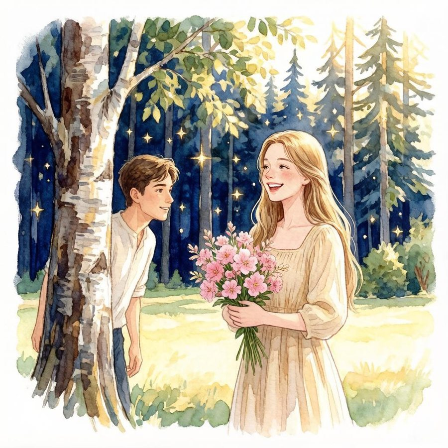
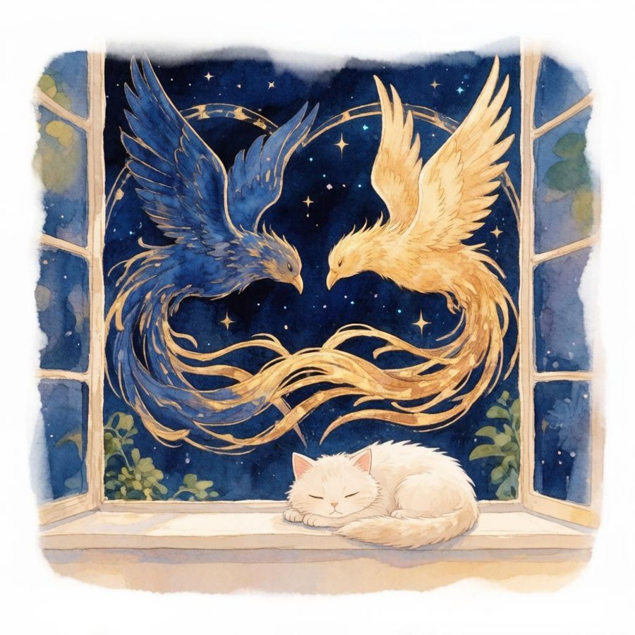
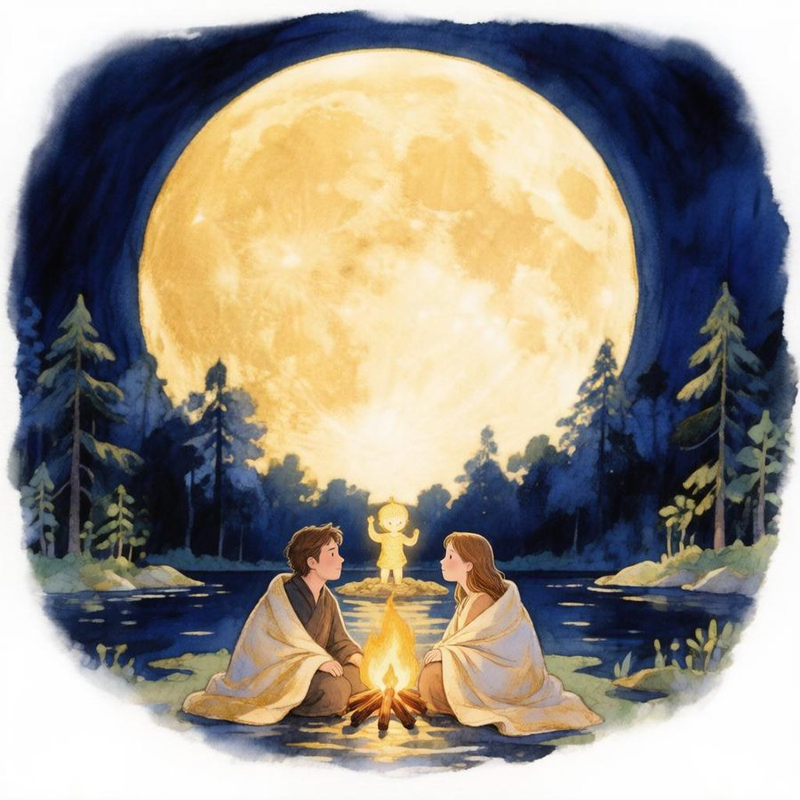
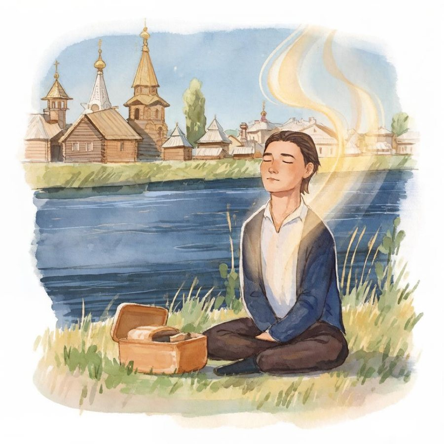
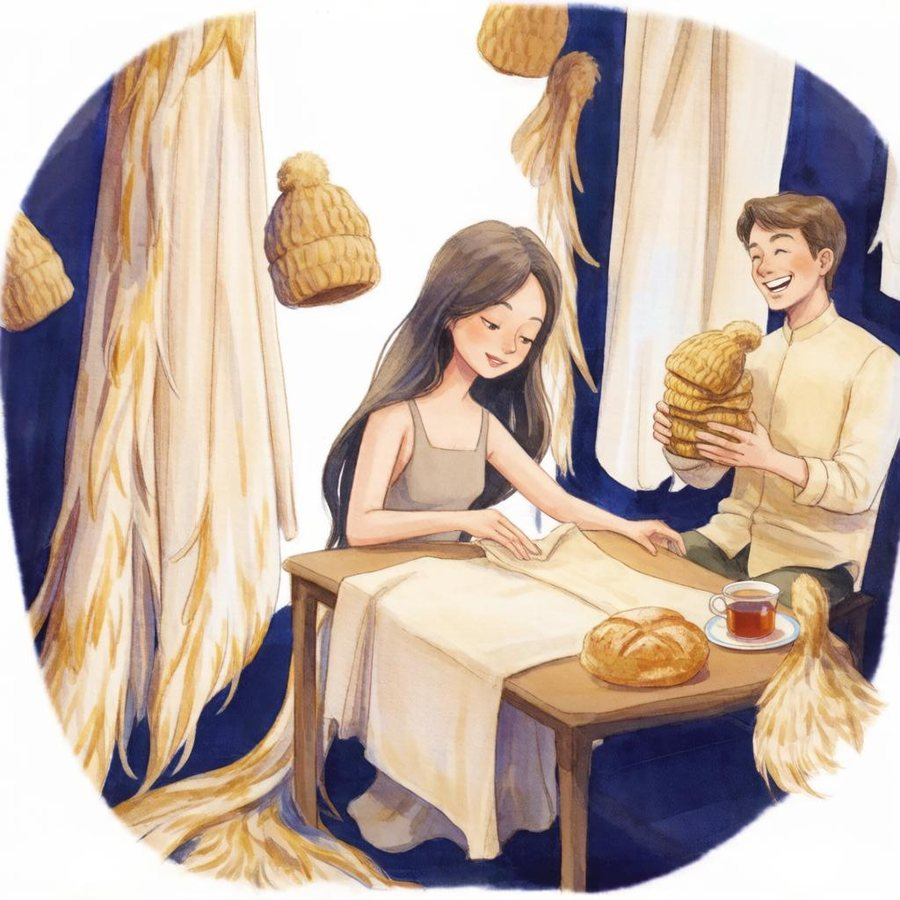
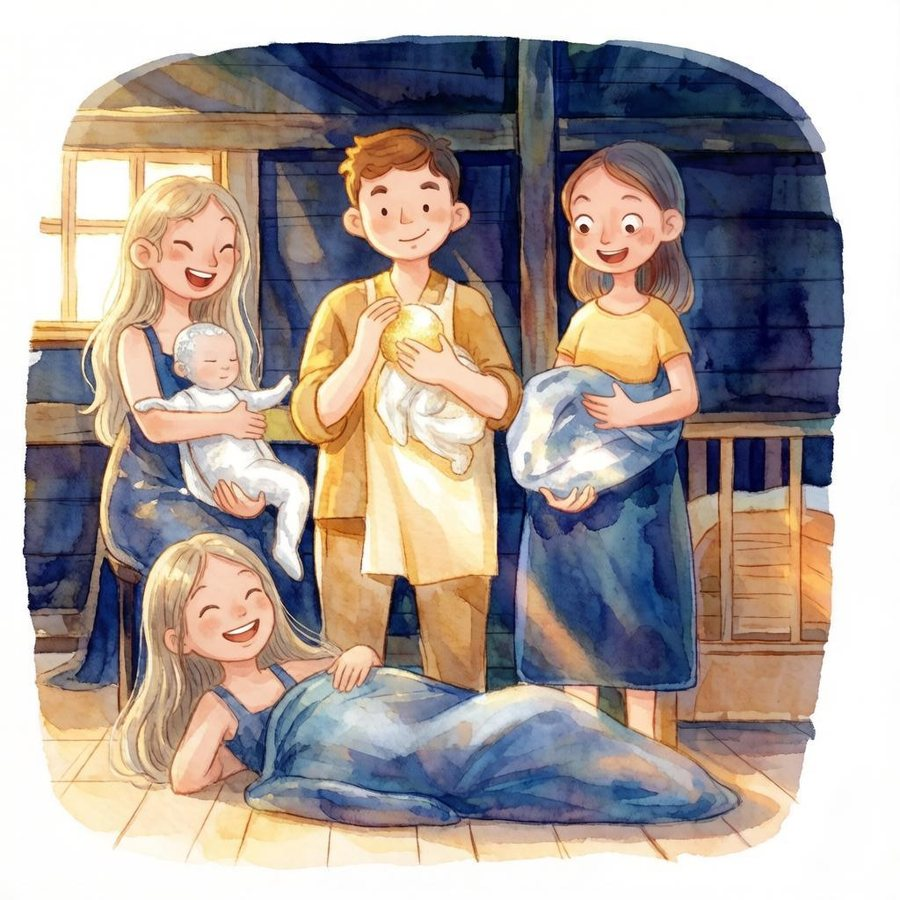
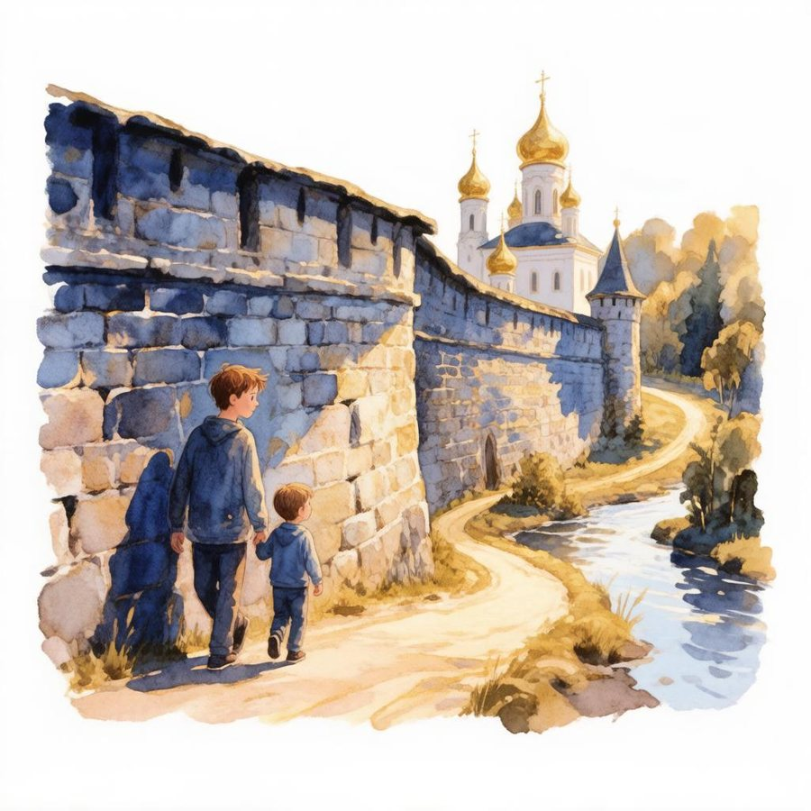
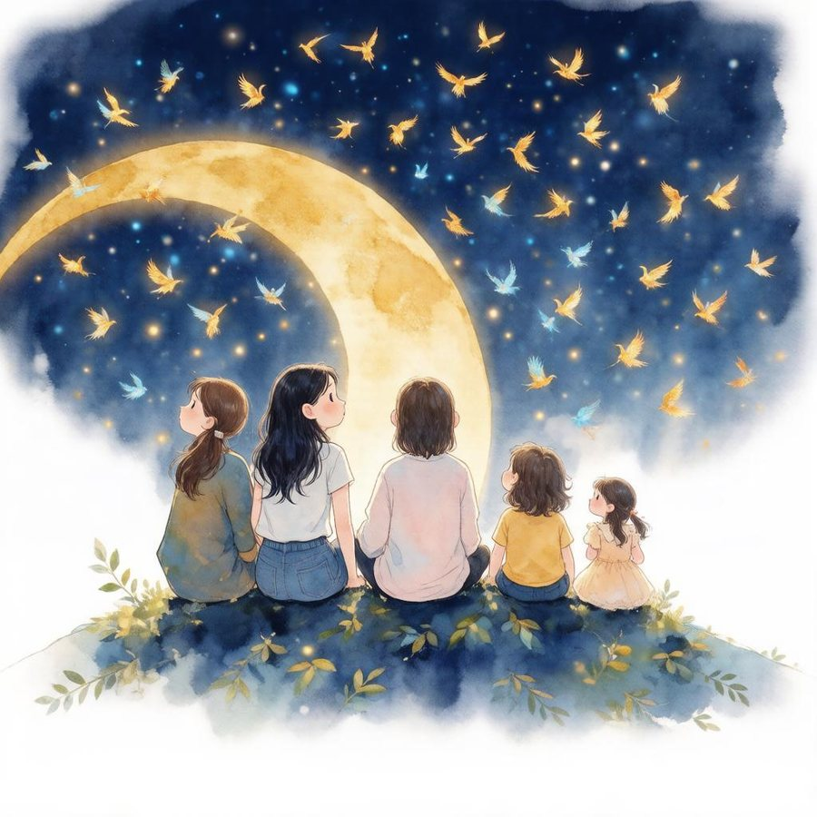

Лес

Нас не знакомили. Был лес,и люди, что приходят в сныне спать, а видеть. Тёплый веслесной, высокой тишины.
И ты — с охапкой иван-чая —смеялась, глядя на меня,как будто сразу различая,что я — оттуда, из огня.
Ты знала руны. В семнадцать летв тебе на миг затихло всё —и ты увидела тот свет,что до сих пор в себе несёшь.
А я годами по утрамсидел, теряя вдохам счёт.Я не искал. Но где-то тамуже был кто-то, кто поймёт.
В наш самый первый день ты мнеписала, путая слова:«Это ты или я? Во снеили наяву?» — Я знал: сперва
не надо отвечать. Пускай.Ответ придёт потом — детьми,дорогами, и через крайналитым чаем. И — людьми.
Два феникса

Ты мне писала в декабре,что феникс в сказках — без пары:сгорает сам, один, к зареи сам встаёт из-под золы.
Но есть почти забытый миф,где их — двое. Синий. Золотой.Ты рассказала мне, спросивглазами: «Помнишь?» — Да. Мы с тобой.
«Вбирает синий — это вдох,а золотой даёт — как выдох».Я ничего сказать не смог —я только понял: это выход
из одиночества огня,в котором ты жила. И я.
Потом весь город стал играть:то «феникс» — буквы на машине,то на блокноте, то опять —на куртке, в метро, у мужчины.
А кошка знала больше нас:я говорил в голосовомпро сердце — и она тотчасложилась на него клубком.
А Мира, слушая про птиц,сказала: «Я хочу летать».И не нашлось у нас границ,чтоб ей хоть в этом отказать.
Вода

Потом был лес — уже вдвоём,и практики, и голод, смех,и озеро, где мы плывёмпод Луной — счастливей всех.
Я сутки там дрожал, смешно,в твоих объятьях у водыи ел пирожки. Ничегоне стёрлось. Это — тоже мы.
Я написал тебе в июне:«Ты — дочь Леса и Неба». Тыв тот вечер, у берёзы, в шуме,просила ветер и листы
петь мне твою любовь. И нежностьдошла. Я слышал. Это — ты.
Я помню кухню. Первый раз.Ты трогала мой позвоночник —и я внутри почувствовал тотчаствою ладонь. Как отклик. Точно.
С тех пор не прячем ничего:тебе темно — и мне темно,тебе светло — и мне светло.Так не соврёшь. Так — заодно.
А после — Ладога. Лунав полнеба. Остров. И костёр.И там, у самого огня,мы начали тот разговор —
о сыне. Не было его,а он уже как будто тут:сидит меж нами, ничегоне просит — ждёт, когда зовут.
Никольск

Я уезжал в Никольск, домой,где Юг-река и тишина,и там однажды, сам не свой,дышал — и вдруг пришла волна.
Я записал тогда, смеясь,на видео: «Я вдохновлён ничем!»И в этом «ничем» была вся связь —с тобой, с лесами, с тишиной, со всем.
Писал тебе: «Всё это — фильм,и режиссёр хорош, ей-богу».А ты мне — чайничек. Своимтеплом встречала у дороги.
Потом — Никольск уже вдвоём:лавандовый латте с черникой,суши (смешно!) — и тихий дом,где тишина была великой.
Ремесло

Наш первый «бизнес» был смешной:мы шапки шили из коноплии колесили всей зимойпо магазинам: «Вам не подошли бы?..»
И нам почти никто не брал —а мы смеялись. Было ясно,что это только лишь начало.Потом так марку и назвали: «Ясно».
Ты привозила хлеб — из гречкизелёной, тёплый, просто так.Мы иван-чай крутили с вечера,варили шоколад — и как
мечтали: сделаем кафе,где съел конфету — и в самадхи...И пахли пальцы — в тишине —и шоколадом, и иван-чаем.
А после — мантии. Из льна,крапивы, конопли — с хвостами,как будто птица — та, одна —спустилась к нам и стала нами.
Ты назвала их: «Вестники Вселенной».Я до сих пор хвалюсь тобой —легко, наивно, откровенно,как мальчик хвалится звездой.
Дом

Когда узнал — ни тени страха,ни «как же мы», ни «что потом».Я знал: подарок. И с размахашагнул туда, где будет дом.
Я узнавал детей заранеепо свету, что тёк впереди:у Лёвы — золотое пламя,у Лии — серебро в груди.
И Лёва родился дома. Светстоял по комнатам три дня,и мы не выходили — нет,ни шагу. Грелись у огня.
Потом — наш лес. Потом — вода.И первый ветер. Он — в слезах.И я бежал домой тогдас таким малюсеньким в руках.
А после — Лия. Тоже дома.Пришла легко, как серебро.Теперь танцует — невесомо —под балет. И в доме так светло.
А Мира. Ты пришла не одна,ты привела её с собой —и я не помню, как онамогла бы быть не мне родной.
Я помню: мы гуляем с ней вдвоём,маркеры, болтовня без края,а после — синий спальник, в нёмона по полу катится, сияя.
Дороги и друзья

Печоры. Изборск. Беларусь.Никольск — к родителям, к моим.Я помню это наизусть:ты шьёшь коллекцию, а с ним,
с маленьким Лёвой, я идупо старым стенам, не спеша,и кажется — мы все в саду,где у дороги есть душа.
Была и осень непростая:решали за ночь — где и как.Я ехал первым. Ты, вторая,везла детей. И помню, как
встречал тебя под утро: тыустала — но в глазах твоихсветилось столько живой красоты,как будто это приключенье — на двоих.
Мы жили годы в доме магов —где Гоша, Катя, Ярослав,где ночью спорят о богах,где ты шьёшь мантии, не устав.
И с Яром вы нашли кадуцей —два змея, вьющихся вокруг жезла.Там столько было твоих ночей,твоих стежков, твоего тепла.
Сейчас — другие: Паша, Вова.Друзья меняются. А дом —он не в стенах. Он в нас. И сновамы зажигаем свет в нём.
Сейчас

Я как-то начал вспоминатьпятьсот причин — чтоб быть, любить.На сороковой пришлось признать:их не исчислить. Можно — жить.
Теперь ты учишь звёзды: Марс,Сатурн, Луну — их ход и строй.Ты говоришь — а я как развнутри их чувствую собой.
И даже Луну я люблюкак часть семьи — давно, всерьёз.Я в первую зиму, к декабрю,назвал тебя так — и сбылось.
Ты как-то написала мне:отлети подальше, на Божий срок, —и видно: Феникс в темнотелетит совсем не одинок.
Вокруг — бессчётно их, огней:сгорают — вспыхивают вновь.И я не знаю ничего верней,чем эта простая любовь.
Вбирает синий. Золотойдаёт. Вдох — выдох. Ты и я.И между нами — свет простой,в котором выросла семья.
Почти семь лет. Трое детей.А я всё вижу, как тогда:ты — с иван-чаем — меж ветвейсмеёшься. И я знаю: да.
Нас не знакомили. Был лес.Он и сейчас вокруг. Он — здесь.
Золотой даёт.